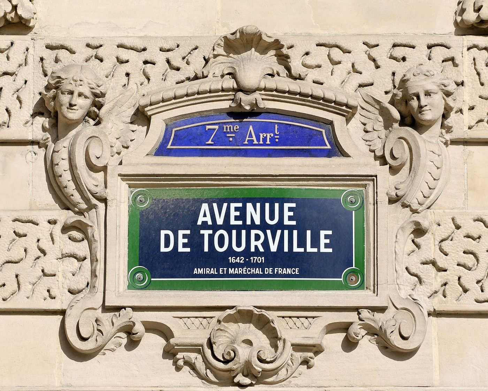
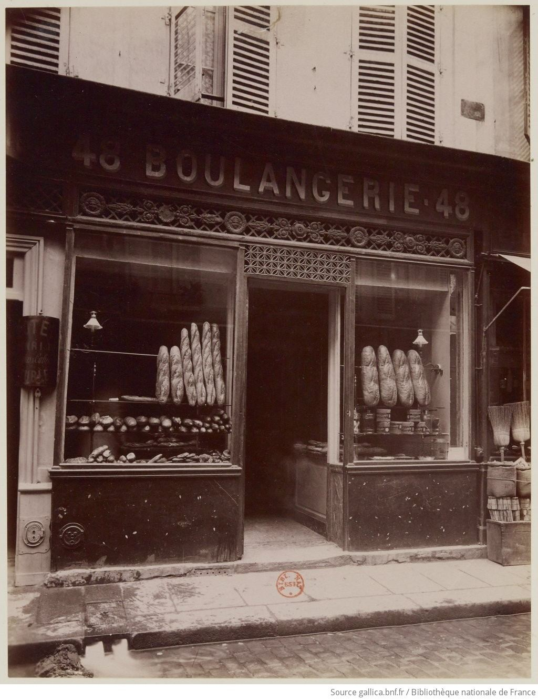
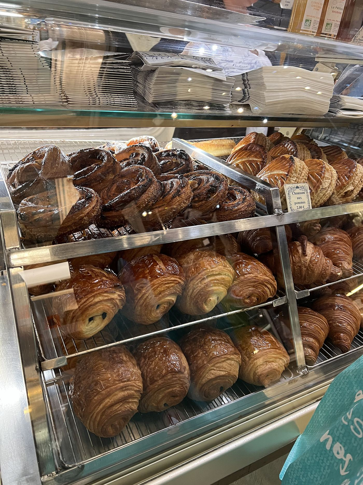
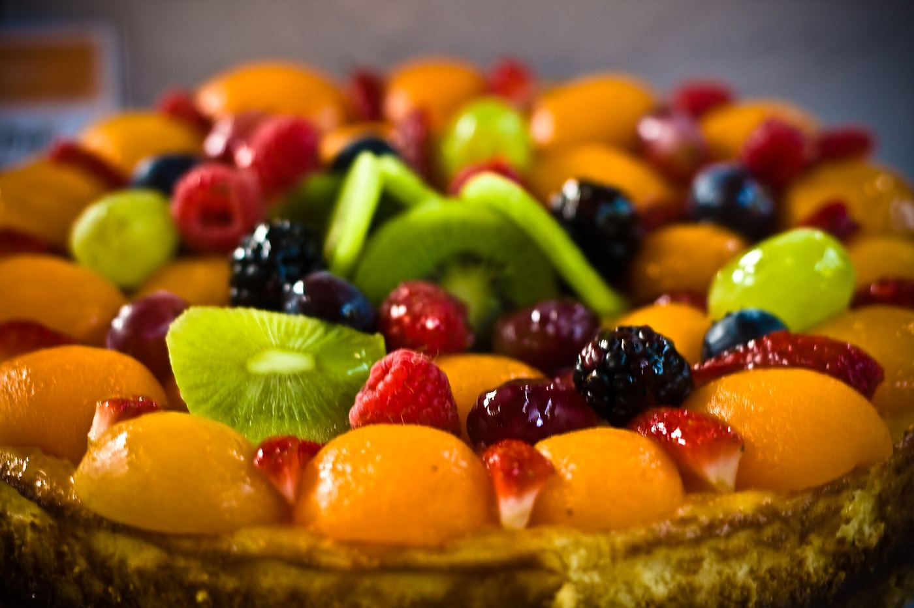
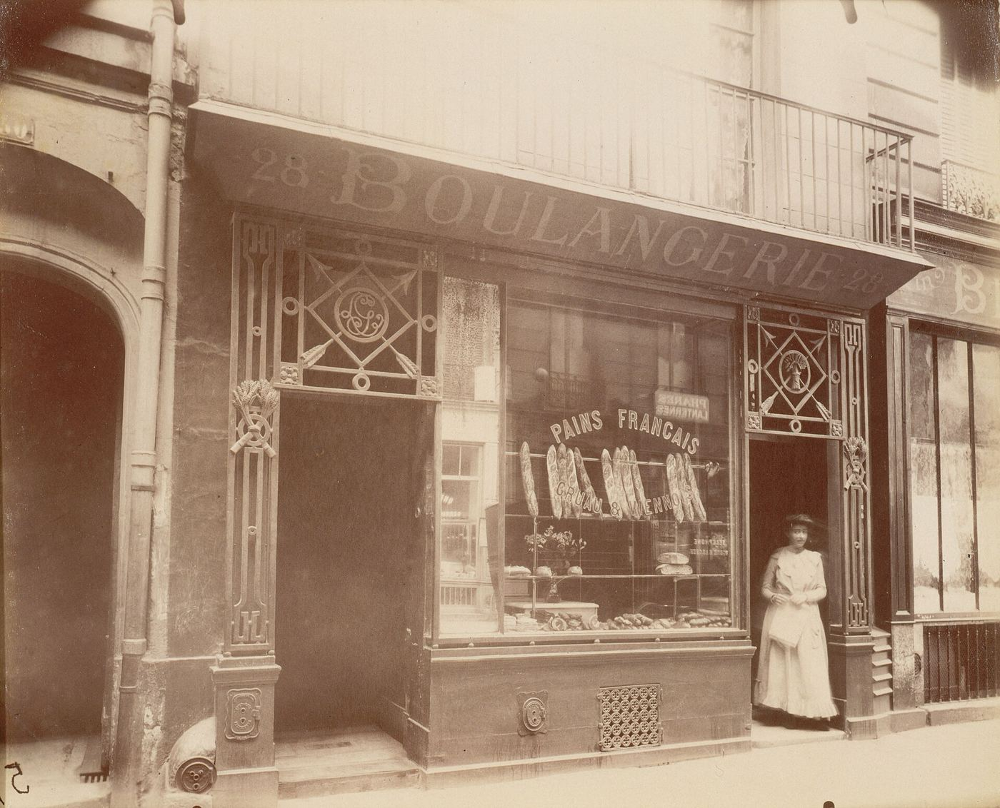
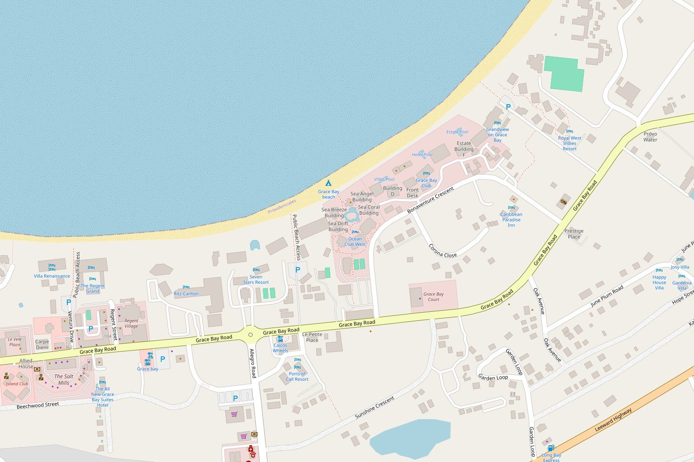

The bakers start in the dark, so the case is full when the door opens at 7:30.

Where Fred and Eric learned the trade: Paris.
A Paris boulangerie a century ago, by Eugène Atget.
The same morning ritual, now on Grace Bay Road.
In the case
-
Plain, almond with a dusting of powdered sugar, and ham and cheese, a breakfast favourite.
-
Chocolate, raisin, cherry, apple and blueberry, with beignets filled with jam or custard. Come early for the beignets.
-
Apple tarts and fruit tarts, made with whatever fruit is in season.
-
Coffee éclairs, cream-filled Neapolitans that some regulars come in for every day, crunchy-soft meringues and cheesecake by the slice.
-
Spinach or ham quiche, personal pizzas, sausage rolls and focaccia.
-
Farm-style loaves and sub rolls in white and whole wheat. Sandwiches of ham and cheese, with or without egg, or tuna and egg, with lettuce and tomato.
Coffee is brewed from TCI Coffee Roasters beans. No seating inside: take it to the benches on the plaza lawn.
Get there early
Guides say there is often a line before the door opens, the beignets go early, and the popular things are gone before midday. Pick the time you'll arrive to see roughly what is usually left.
The case is full. You may wait in a short line.
Cash only.

Cakes to order
Birthdays, weddings, graduations and anniversaries.
“We are very flexible and creative regarding the cake flavors and fillings and can do just about anything our customers ask.”
Eric Cuvillon
Cake orders are taken in person at the counter. Email first if you have a question.
Email about a cakeFrom Paris to Grace Bay Road
Two brothers from Paris
Frédéric Cuvillon baked in France for sixteen years; his brother Eric cooked at Le Lido on the Champs-Élysées. Today Eric runs the shop with Tatiana Milovanovic at the counter.
Bread for the island first
For years they baked for about twenty of the island's restaurants and resorts from a small kitchen behind Caicos Café. Neighbours kept asking to buy direct, so in 2009 the shop opened.
Find the shop“There are no expiration dates here!”
Eric Cuvillon, on baking everything fresh each day

Written up by Fodor's, Trip.com, Times of the Islands, Visit Turks and Caicos Islands, Wanderlog and The Palms.
“This little French bakery in the heart of Grace Bay is exquisite and definitely deserves a stop by at least once.”
Fodor's Travel
“Be sure to get there early though, as there's often a line waiting for them to open!”
Trip.com
Guests keep mentioning the ham and cheese croissants, the almond croissants, the quiche, the fruit tarts and the beignets, and remind each other to bring cash.
Had breakfast here? Leave a review.
Ratings via Wanderlog, October 2026. Quotes from Fodor's and Trip.com as published on Wanderlog; Eric Cuvillon's words from Times of the Islands, 2010.

Caicos BakeryFind the shop
Caicos Café Plaza, 295 Grace Bay Road
Grace Bay, Providenciales
- Monday to Saturday
- 7:30am to 3:30pm
- Sunday
- Closed
- Payment
- Cash only
Monday to Saturday, 7:30am to 3:30pm
Get directions